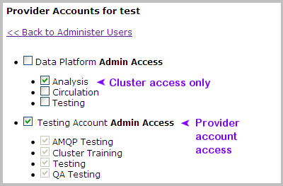

Managing User Accounts
| PERMISSIONS REQUIRED |
| To fully manage user accounts, you must be a Nimbul administrator. For more information, see Permissions and Roles. |
Note: If you are not a system administrator, you can still manage your own profile, password and other account information by clicking [Your User Name]’s Account in the main Nimbul menu.
Viewing Accounts
To view a list of user accounts, complete these steps:
- In the main Nimbul menu, click Admin Controls.
- Click Administer Users. A list of users appears, showing logins (user names), display names and e-mail addresses, as well as the following information:
| Column | Description |
| Admin? | Indicates whether the user is a Nimbul (system) administrator. Administrators also appear in bold green type. |
|---|---|
| Active? | Indicates whether the user has responded to the account activation e-mail message. Nimbul administrators can also activate an inactive account by clicking the link in this column. |
| Enabled? | Indicates whether the user’s account is currently enabled (the account is automatically enabled when first activated). To disable the account, the link in this column. |
| Auth | Type of authentication: LDAP or database (DB). See also the Overview. |
| Roles | Click the link in this column to edit the user’s roles, as described below. |
| Access Rules | Click the link in this column to edit access rules for this user, as described below. |
Note: To see a user’s recent activity, as well as the date the user registered for an account, click the user’s name in the Login column.
Editing Roles
To edit a user’s roles, complete these steps:
- Click the link in the Roles column.
- On the Roles page, select or clear the checkbox that indicates whether this user is a Nimbul (system) administrator. For more information, see Permissions and Roles.
- Click Update to save your changes.
Editing Access Rules
To edit access rules for a user, complete these steps:
- Click the link in the Access Rules column.
- On the Provider Accounts for [user-name] page, select or clear the checkboxes to grant or deny access to clusters and provider accounts.
- Top-level checkboxes control administrator access to provider accounts and all clusters within them.
- Cluster checkboxes control administrator access to clusters only.

- Click Update to save your changes.
Related Topics
Next: Permissions and Roles »